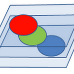
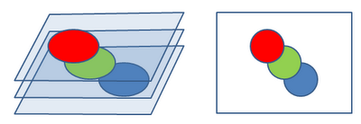
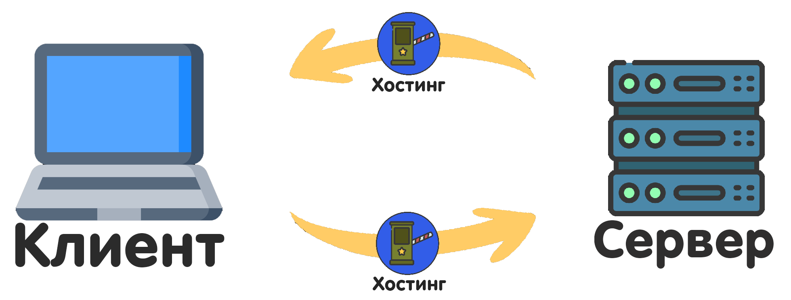
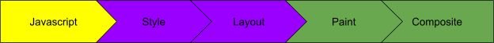

Xoş gəldiniz! veb tərtibatçısının təlimatına
Təlaşsız və yorucu sənədlər olmadan veb saytın inkişafı üçün ümumi bələdçi.
Bütün məqalələr:

Saytın əməliyyatı
Sayt 3D layering 2V qat, adətən stilize CSS və JavaScript ilə təchiz olunur.
Saytın əməliyyatı . İş sahəsi
Hər saytın XYZoxları var. X - eni(1D), Y - hündürlük(2D), Z - qat səviyyəsi(3D).
Bir təbəqənin nə olduğunu soruşursunuz və hər şeyi 3d düzdə görsəm niyə 2D?
- Cavab verirəm: bütün elementlərin hündürlükdə öz mövqeyi var. Bir qutu təsəvvür edin ki,
biz bir dəstə yumşaq oyuncaq eskiz etdik, bağladıq və yalnız bir şəffaf divarımız var.
İndi qutunu sıxacağıq və içindəki şəffaf divardan baxanda yalnız görəcəyik yumşaq oyuncaqların
"təbəqələri" bir-birinə qatlanmışdır. Sayt vəziyyətində bu divar brauzer ekranıdır və elementlərimiz
yumşaq oyuncaqlardır. Belə görünür:

Varsayılan olaraq, bütün elementlər var Avtomatik quraşdırma-auto. Bununla birlikdə, CSS vasitəsilə dəyərimizi də təyin edə bilərik:
z-index: [layer]; və ya JavaScript:
element.zIndex = [layer];
element.style.zIndex = "[layer]"; // Üslublar vasitəsilə
Ümumiyyətlə header, footer, nav və müxtəlif açılan menyular kimi elementlərdə istifadə olunur.
Server-müştəri konsepsiyası
Adi yerli şəbəkələri nəzərə almasaq, bu konsepsiya hər yerdə mövcuddur. Onun mahiyyəti server və müştəri arasında mesaj mübadiləsidir. Müştəri İstifadəçinin özüdür və serverə müraciət etmədən yalnız yerli olaraq baş verənlər. Server "baş idarəetmə" dir, bütün müştərilərə təlimatlar verir və məlumatları saxlayır.
Ayrıca, server və müştəri arasında tez - tez "poçtalyon", və ya Hosting ən məşhur "Cloudflare" dən biridir. Hosting PPC ilə müqayisə edilə bilər. Həm də təhlükəsiz bir əlaqə (giriş / çıxış) təmin etməyə çalışır və tez-tez haker hücumlarından qorunur.
Məsələn, bank səhifəsində "tərcümə tarixi" sekmesine keçdiyimiz zaman müştəri serverdən bu tarixi soruşur, sonra skriptlə işləyir və gördüyümüz siyahıya əlavə edir.
Server istənilən cavabı müştəriyə qaytara bilər, lakin müştərinin onu düzgün idarə edə biləcəyi bir həqiqət deyil. Adətən, inkişaf etdiricilər uyğunluğu maksimum dərəcədə artırmağa çalışırlar və səhv işlənməsini də əlavə edirlər.

Kompilyasiya
İndi brauzer kodumuzu necə tərtib edir. Brauzer saytı bu ardıcıllıqla tərtib edir(tarar, başa düşür və icra edir):

<head> bölməsi vasitəsilə bağladığımız hər hansı bir sənəddə defer və asyncbayrağından istifadə etmək imkanı var.
Defer saytı tərtib etdikdən sonra(yəni HTML və CSS-i yüklədikdən) və bütün skriptlərin defer bölməsindən <head> yazıldığı ilk növbədə skript işlətmək deməkdir. Async saytın tərtib mərhələsindən və növbədəki mövqeyindən asılı olmayaraq skript yükləndikdən dərhal sonra işə salmaq deməkdir. Asyncdefer - dən fərqli olaraq daha az tətbiq olunur.
Ancaq tətbiq defer çox vacibdir, çünki əksər saytlar özünü oynayır,
yəni özlərini qururlar və defer tez-tez işin əvəzolunmaz elementidir.